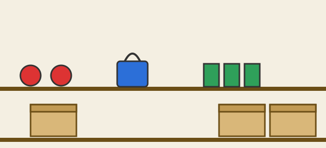

Selbsteinschätzung
Die Selbsteinschätzung braucht JavaScript. Wo und wann?
Mit dieser Selbsteinschätzung bekommst du mit 6 Aufgaben einen Überblick, was du schon kannst. Sie fragt jede Seite ab.
Die App sagt dir nicht bei jeder Aufgabe, ob sie stimmt. Erst am Ende siehst du für jede abgefragte Seite, ob du sie schon kannst. Was du leer lässt, zählt als nicht gekonnt.
Dein Ergebnis bleibt nur auf diesem Gerät. Ein neuer Start ersetzt es.
Seite 1 von 3
Aufgabe 1
Schau auf das Bild und wähle die richtige Präposition.

Welche Kiste steht wo? Es gibt eine blaue, eine gelbe, eine rote und eine grüne Kiste.
Quelle: eigene Zeichnung. Lizenz: CC-BY-4.0.Aufgabe 2
Schreibe den Satz.
Seite 2 von 3
Aufgabe 3
Schau auf das Regal und wähle there is oder there are.

Mr Hill zählt, was im Regal steht.
Quelle: eigene Zeichnung. Lizenz: CC-BY-4.0.Aufgabe 4
Schreibe den Satz.
Seite 3 von 3
Aufgabe 5
Wähle in, on oder at.
Aufgabe 6
Schreibe den Satz auf Englisch.
Dein Ergebnis
Mit einem KI-Tutor weiterlernen
Ein KI-Tutor kann mit deinem Ergebnis die Seiten mit dir durchgehen, die noch nicht sitzen. Dein Klick gibt ihm das Ergebnis und deine Eingaben; sonst schickt die App nichts weg.
Du nutzt dein eigenes Konto beim Anbieter. Der Assistent ist kein Angebot von lernapps.net: lernapps liefert nur Inhalte und Aufgaben.